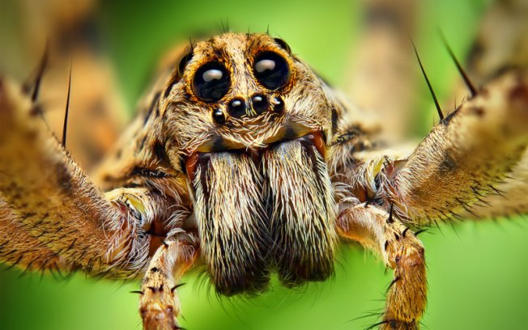

Artrópodes

Os artrópodes são uma classe diversificada de animais invertebrados que engloba uma grande quantidade de espécies.
Eles são encontrados em diferentes habitats ao redor do mundo, desde os oceanos até as regiões terrestres.
Os artrópodes possuem um exoesqueleto rígido e articulado, além de segmentação do corpo e apêndices articulados.
Essas características os tornam altamente adaptáveis e bem-sucedidos em uma variedade de ambientes.
Dentro da classe dos artrópodes, encontramos grupos distintos, como os insetos, aracnídeos, crustáceos e miriápodes.
Os insetos, por exemplo, são o grupo mais numeroso e diversificado, representando a maioria das espécies de artrópodes.
Eles desempenham papéis importantes na polinização de plantas, decomposição de matéria orgânica e como fonte de alimento para outros animais.
Os artrópodes possuem uma ampla gama de tamanhos, desde pequenos insetos até grandes crustáceos. Suas características adaptativas, como a capacidade de voar, camuflagem e produção de veneno, lhes permitem sobreviver e se reproduzir com sucesso em seus respectivos ambientes.
Além disso, muitos artrópodes exibem comportamentos complexos, como construção de teias, cuidado parental e interações sociais.
A presença dos artrópodes é fundamental para a manutenção dos ecossistemas. Eles desempenham papéis essenciais na cadeia alimentar, atuando como predadores, decompositores, polinizadores e dispersores de sementes.
Sua diversidade e importância ecológica fazem dos artrópodes um grupo fascinante e fundamental para o equilíbrio dos ecossistemas terrestres e aquáticos.